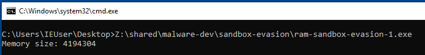

During my malware sandbox evasion research, I stumbled upon the Unprotect Project website. It is a community-contributed repository of evasion techniques used by malware. I saw that the the Checking Memory Size technique doesn't have a example snippet yet so I figured this would be a good first contribution to the project.

What to expect
In this blog post I'll be making a code snippet that showcases how to get the size of a computer's RAM in C. I will then convert this code into x64 assembly, mostly for me to practice writing in it, but also so that we can understand it better.
Checking the memory
The idea behind this evasion technique is simple. Most modern user machines will have at least around 4GB of RAM. Anything lower than that can be an indication that the machine is probably a sandbox (To save costs). While it's not exactly fool-proof, it can be used with other techniques to have a better idea of the machine.
There are two available APIs to get the memory size of a computer on Windows: GetPhysicallyInstalledSystemMemory and GlobalMemoryStatusEx. The former lists the physically installed RAM from the BIOS, while the latter lists the amount available for the operating system to use. Note that the values returned from these two functions will be different but from my tests the difference is only a few hundreds of bytes. Any of these two we can use for our purpose.
Using GetPhysicallyInstalledSystemMemory
Calling GetPhysicallyInstalledSystemMemory in C is simple:
#include <stdio.h>
#include <windows.h>
int main(void)
{
unsigned long long memory_size = 0;
GetPhysicallyInstalledSystemMemory(&memory_size);
printf("Memory size: %lld\n", memory_size);
}
Running the above code shows the following result:

And this is what my memory settings is set to on VMWare:

You'll immediately notice that the returned value is not exactly the same as the memory settings. I, too, wondered about this so I did a couple of tests.
Investigating the results
What I found was that the values that are returned by the GetPhysicallyInstalledSystemMemory in hex format always have the last 3 bytes set to zero. To test this I changed the VM settings and noted the values returned by the program. Here's a table of the results:
| VM Settings | Returned Value | In Hex |
|---|---|---|
| 2000MB | 2048000 | 0x1F4000 |
| 3324MB | 3403776 | 0x33F000 |
| 4096MB | 4194304 | 0x400000 |
| 4338MB | 4493312 | 0x449000 |
| 5675MB | 5816320 | 0x58C000 |
Before you think that this is a VM thing, here is the same behavior with a Windows system that is not on a VM:
| Installed RAM | Returned Value | In Hex |
|---|---|---|
| 16384MB | 16777216 | 0x1000000 |
According to the MSDN docs, the value returned is taken from the SMBIOS firmware tables. I tried to dig further and found the SMBIOS standard manual and saw that the value in the memory size field is returned in MB. This still doesn't explain why the last 3 digits are always zero though. I'm guessing that the API just truncates the last 3 values and saves the higher bytes?
EDIT(2022-08-15): Twitter user @Endeavxor pointed out that the returned value of "GetPhysicallyInstalledSystemMemory" is expressed in kibibytes instead of kilobytes. This means the result
4194304when divided by1024is4096and is exactly the Memory value set in the VM settings. This means the value returned by the function is correct. It's so simple and I missed it!
Before we get hopelessly trapped in the rabbit hole that is OS internals, let's continue by converting our code above to x64 assembly.
Converting to x64 Assembly
Before we can call the GetPhysicallyInstalledSystemMemory function, we first need to reserve space on the stack that will serve as the memory_size local variable. This is where the result of the function will be placed.
xor rax, rax ; Clear rax
push rax ; Push rax to the stack
lea rcx, [rsp] ; Argument 1; Load the memory location of memory_size to rcx
We then call the GetPhysicallyInstalledSystemMemory function making sure that we reserve and release the shadow space.
sub rsp, 32 ; Reserve shadow space
call GetPhysicallyInstalledSystemMemory
add rsp, 32 ; Release shadow space
Aside: Shadow space
The concept of "Shadow Space" is important in x64 assembly. I've already discussed it briefly in a previous post but you can read up more about it here and then here.
The result on whether GetPhysicallyInstalledSystemMemory succeeded or not is placed in the ax register. It's good practice to add code to handle if a failure occurs, but we won't be bothering with that for our example.
What we are interested in is the value placed in the memory location pointed to by memory_size. We can confirm this by checking the value on the stack, as shown below where 58C000h converts to 5816320 which is roughly near the 5.5 GB setting we have set in VMWare.

A much easier way to confirm is that we can also use the printf function to display the value of memory_size on the console. But before we can do that we first need to declare the format string so we can pass it later as the first argument.
segment .data
msg_memory_size db "Memory size: %lld", 0xd, 0xa, 0
We then call printf making sure we load the correct argument data to the respective registers.
mov rdx, [rsp] ; Argument 2; Result of GetPhysicallyInstalledSystemMemory
lea rcx, [msg_memory_size] ; Argument 1; Format string
sub rsp, 32 ; Reserve shadow space
call printf
add rsp, 32 ; Release shadow space
Running that we can now display the value of the memory.
Here's the full assembly code:
bits 64
default rel
segment .data
msg_memory_size db "Memory size: %lld", 0xd, 0xa, 0
segment .text
global main
extern ExitProcess
extern GetPhysicallyInstalledSystemMemory
extern printf
main:
push rbp
mov rbp, rsp
xor rax, rax ; Clear rax
push rax ; Push RAX to the stack
lea rcx, [rsp] ; Argument 1; Load the memory location of memory_size to rcx
sub rsp, 32 ; Reserve shadow space
call GetPhysicallyInstalledSystemMemory
add rsp, 32 ; Release shadow space
mov rdx, [rsp] ; Argument 2; Result of GetPhysicallyInstalledSystemMemory
lea rcx, [msg_memory_size] ; Argument 1; Format string
sub rsp, 32 ; Reserve shadow space
call printf
add rsp, 32 ; Release shadow space
add rsp, 0x8 ; Release the space of memory_size local variable
xor rax, rax
call ExitProcess
Up next
In the next blog post I'll be showing how to get the size RAM size via an alternative method using GlobalMemoryStatusEx. The code is also straightforward but we'll be exploring how it's values differ from GetPhysicallyInstalledSystemMemory and also how to deal with C structures on the stack in x64 assembly.
For now, you can view the C and Assembly code along with the build scripts on the repository here.
Feel free to reach out to me on Twitter or LinkedIn for any questions or comments.